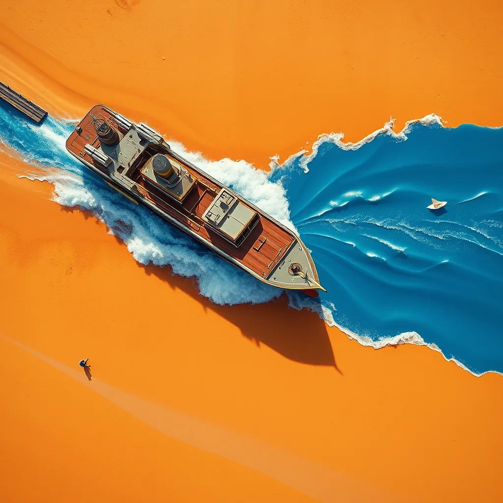

First Light ·
a paper boat launched on a gutter stream, a ship launched, sliding down the slipway into the harbour in a wall of spray
Paper boat folds flat against the brick. It slips into the gutter. Wobbles forward, tilts. Water hits its side. It spins once. Then straightens. Slices down the drainpipe. Leaves a thin white wake behind it. Small and quick in the shadow.
Rowing boat drops off stone. Wood groans under weight. Slings into black water with a splash. Hull dips, rises, catches air.
Steel giant slides on rails. Gravity wins instantly. Mass hits water. Wall of spray explodes outward. Decks vanish in white mist. Engine roars as bow crashes down. Water bows up high behind the iron nose. Nothing holds it back but momentum. It drives forward, breaking the surface. Still sliding. Still moving.
How this piece was made
- 01Poem written byQwen3.5 9B recorded
Local model on one RTX 3070 Ti. It also critiques its own drafts and rewrites up to five times.
- 02Image prompt written byQwen3 8B recorded
Local model. It reads the poem and writes the picture brief.
- 03Image rendered byFLUX.1 [schnell] recorded
Local diffusion model on the same GPU. Several candidates per poem.
- 04Image chosen byClaude Opus 5.5 recorded
Claude, running as the corporation's blind art-critic. It scores every candidate and never writes a prompt.
- Poem drafts
- 5 of 5
- Poem self-score
- 7/10
- Image candidates
- 4
- Judge’s score
- 2/10
- Selection
- Highest-scoring on-subject candidate (did not clear the judge’s bar outright)
The image brief the local model wrote
A bold flat-colour screen-print poster, saturated and high-contrast, made of broad flat shapes with hard clean edges, every shape one solid colour cut like paper, with no shading, no gradient and no glow inside any shape, no photographic detail, no soft focus, no blur. Two colours own the whole image: a field of warm sand, ochre and rust, and cobalt blue for the moving water and nothing else. Seen from high above: the event itself, HUGE, fills more than half of the image and runs out of the frame, caught in the middle of happening and thrown across the picture on a diagonal, with streaks, spray, sparks or beams. The whole image is one continuous scene from edge to edge. Behind the main form one wide flat area of unbroken ochre rests the eye. Small things are crisp silhouettes. The subject: Steel giant slides on rails, cobalt blue spray exploding outward as it crashes into water. A small cobalt paper boat floats in the ochre gutter, dwarfed by the vast continent-shaped silhouette of the ship’s wake. Hard noon light strikes the spray from above, flaring cobalt across the frame. A single flat ochre field rests the eye beneath the diagonal sweep of breaking waves.